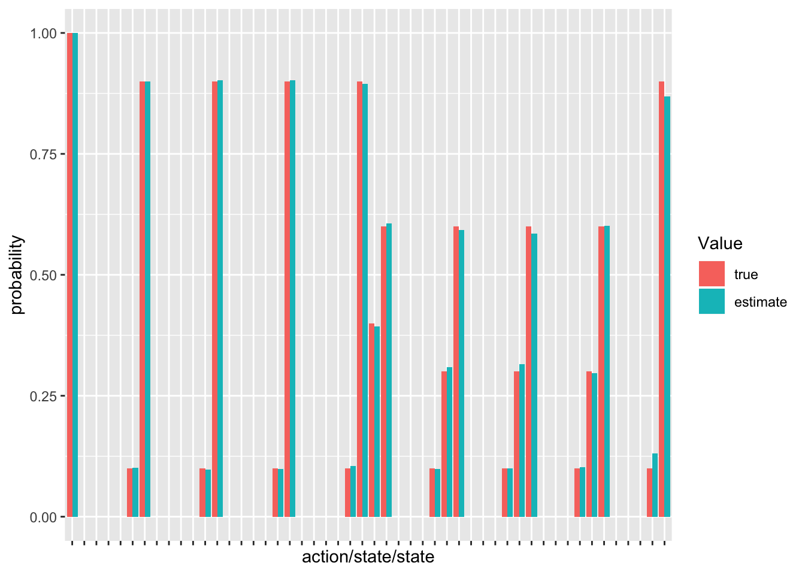
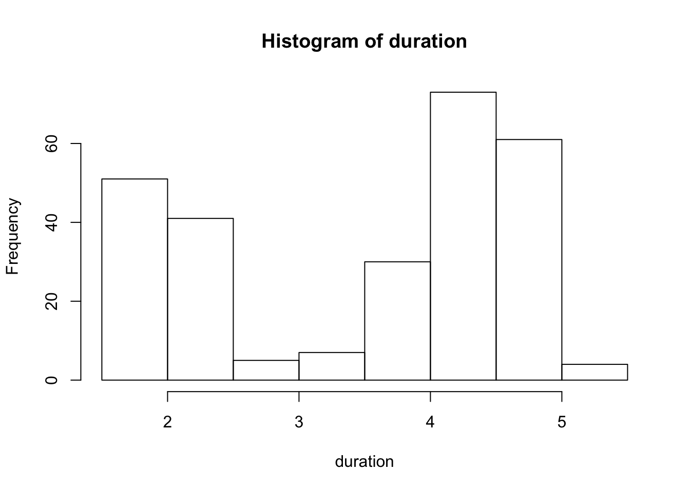
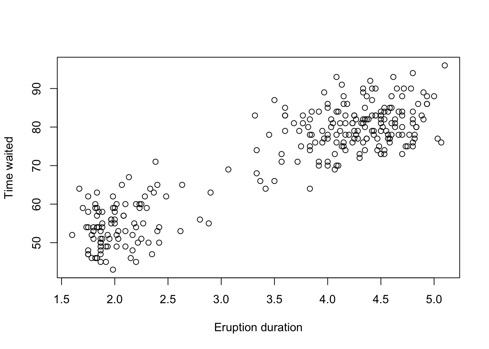

Chapter 3 Descriptive Analysis in R
3.1 Qualitative Data
- A data sample is called qualitative, also known as categorical, if its values belong to a collection of known defined non-overlapping classes.
- Load a data
painters, which is a compilation of technical information of a few eighteenth century classical painters. - The school to which a painter belongs, as indicated by a factor level code as follows: “A”: Renaissance; “B”: Mannerist; “C”: Seicento; “D”: Venetian; “E”: Lombard; “F”: Sixteenth Century; “G”: Seventeenth Century; “H”: French.
library(MASS) # load the MASS package ##
## 次のパッケージを付け加えます: 'MASS'## 以下のオブジェクトは 'package:dplyr' からマスクされています:
##
## selectpainters ## Composition Drawing Colour Expression School
## Da Udine 10 8 16 3 A
## Da Vinci 15 16 4 14 A
## Del Piombo 8 13 16 7 A
## Del Sarto 12 16 9 8 A
## Fr. Penni 0 15 8 0 A
## Guilio Romano 15 16 4 14 A
## Michelangelo 8 17 4 8 A
## Perino del Vaga 15 16 7 6 A
## Perugino 4 12 10 4 A
## Raphael 17 18 12 18 A
## F. Zucarro 10 13 8 8 B
## Fr. Salviata 13 15 8 8 B
## Parmigiano 10 15 6 6 B
## Primaticcio 15 14 7 10 B
## T. Zucarro 13 14 10 9 B
## Volterra 12 15 5 8 B
## Barocci 14 15 6 10 C
## Cortona 16 14 12 6 C
## Josepin 10 10 6 2 C
## L. Jordaens 13 12 9 6 C
## Testa 11 15 0 6 C
## Vanius 15 15 12 13 C
## Bassano 6 8 17 0 D
## Bellini 4 6 14 0 D
## Giorgione 8 9 18 4 D
## Murillo 6 8 15 4 D
## Palma Giovane 12 9 14 6 D
## Palma Vecchio 5 6 16 0 D
## Pordenone 8 14 17 5 D
## Tintoretto 15 14 16 4 D
## Titian 12 15 18 6 D
## Veronese 15 10 16 3 D
## Albani 14 14 10 6 E
## Caravaggio 6 6 16 0 E
## Corregio 13 13 15 12 E
## Domenichino 15 17 9 17 E
## Guercino 18 10 10 4 E
## Lanfranco 14 13 10 5 E
## The Carraci 15 17 13 13 E
## Durer 8 10 10 8 F
## Holbein 9 10 16 13 F
## Pourbus 4 15 6 6 F
## Van Leyden 8 6 6 4 F
## Diepenbeck 11 10 14 6 G
## J. Jordaens 10 8 16 6 G
## Otho Venius 13 14 10 10 G
## Rembrandt 15 6 17 12 G
## Rubens 18 13 17 17 G
## Teniers 15 12 13 6 G
## Van Dyck 15 10 17 13 G
## Bourdon 10 8 8 4 H
## Le Brun 16 16 8 16 H
## Le Suer 15 15 4 15 H
## Poussin 15 17 6 15 H3.1.1 Frequency Distribution
The frequency distribution of a data variable is a summary of the data occurrence in a collection of non-overlapping categories.
Example: In the data set painters, the frequency distribution of the School variable is a summary of the number of painters in each school.
Problem: Find the frequency distribution of the painter schools in the data set painters.
Solution: We apply the
tablefunction to compute the frequency distribution of the School variable.
school <- painters$School # the painter schools
school_freq <- table(school) # apply the table function
school_freq## school
## A B C D E F G H
## 10 6 6 10 7 4 7 43.1.2 Relative Frequency Distribution
The relative frequency distribution of a data variable is a summary of the frequency proportion in a collection of non-overlapping categories.
Example: In the data set painters, the relative frequency distribution of the School variable is a summary of the proportion of painters in each school.
Problem: Find the relative frequency distribution of the painter schools in the data set painters.
Solution: We first apply the
tablefunction to compute the frequency distribution of the School variable. Then we find the sample size of painters with thenrowfunction, and divide the frequency distribution with it. Therefore the relative frequency distribution is:
nrow(painters)## [1] 54school_relfreq <- school_freq / nrow(painters)
school_relfreq## school
## A B C D E F
## 0.18518519 0.11111111 0.11111111 0.18518519 0.12962963 0.07407407
## G H
## 0.12962963 0.074074073.1.3 Bargraph
A bar graph of a qualitative data sample consists of vertical parallel bars that shows the frequency distribution graphically.
Example: In the data set painters, the bar graph of the School variable is a collection of vertical bars showing the number of painters in each school.
Problem: Find the bar graph of the painter schools in the data set painters.
Solution: We first apply the
tablefunction to compute the frequency distribution of the School variable. Then we apply thebarplotfunction to produce its bar graph.
barplot(school_freq)
3.1.4 Categorical Statistics
Suppose we would like to know which school has the highest mean composition score. We would have to first find out the mean composition score of each school.
Problem: Find out the mean composition score of school C in the data set painters.
Solution: Use the tapply function to compute them all at once.
tapply(painters$Composition, painters$School, mean)## A B C D E F G H
## 10.40000 12.16667 13.16667 9.10000 13.57143 7.25000 13.85714 14.000003.2 Quantitative Data
- Quantitative data, also known as continuous data, consists of numeric data that support arithmetic operations.
- Load the data
faithful, which consists of a collection of observations of the Old Faithful geyser in the USA Yellowstone National Park. - The first one, called eruptions, is the duration of the geyser eruptions. The second one, called waiting, is the length of waiting period until the next eruption.
faithful## eruptions waiting
## 1 3.600 79
## 2 1.800 54
## 3 3.333 74
## 4 2.283 62
## 5 4.533 85
## 6 2.883 55
## 7 4.700 88
## 8 3.600 85
## 9 1.950 51
## 10 4.350 85
## 11 1.833 54
## 12 3.917 84
## 13 4.200 78
## 14 1.750 47
## 15 4.700 83
## 16 2.167 52
## 17 1.750 62
## 18 4.800 84
## 19 1.600 52
## 20 4.250 79
## 21 1.800 51
## 22 1.750 47
## 23 3.450 78
## 24 3.067 69
## 25 4.533 74
## 26 3.600 83
## 27 1.967 55
## 28 4.083 76
## 29 3.850 78
## 30 4.433 79
## 31 4.300 73
## 32 4.467 77
## 33 3.367 66
## 34 4.033 80
## 35 3.833 74
## 36 2.017 52
## 37 1.867 48
## 38 4.833 80
## 39 1.833 59
## 40 4.783 90
## 41 4.350 80
## 42 1.883 58
## 43 4.567 84
## 44 1.750 58
## 45 4.533 73
## 46 3.317 83
## 47 3.833 64
## 48 2.100 53
## 49 4.633 82
## 50 2.000 59
## 51 4.800 75
## 52 4.716 90
## 53 1.833 54
## 54 4.833 80
## 55 1.733 54
## 56 4.883 83
## 57 3.717 71
## 58 1.667 64
## 59 4.567 77
## 60 4.317 81
## 61 2.233 59
## 62 4.500 84
## 63 1.750 48
## 64 4.800 82
## 65 1.817 60
## 66 4.400 92
## 67 4.167 78
## 68 4.700 78
## 69 2.067 65
## 70 4.700 73
## 71 4.033 82
## 72 1.967 56
## 73 4.500 79
## 74 4.000 71
## 75 1.983 62
## 76 5.067 76
## 77 2.017 60
## 78 4.567 78
## 79 3.883 76
## 80 3.600 83
## 81 4.133 75
## 82 4.333 82
## 83 4.100 70
## 84 2.633 65
## 85 4.067 73
## 86 4.933 88
## 87 3.950 76
## 88 4.517 80
## 89 2.167 48
## 90 4.000 86
## 91 2.200 60
## 92 4.333 90
## 93 1.867 50
## 94 4.817 78
## 95 1.833 63
## 96 4.300 72
## 97 4.667 84
## 98 3.750 75
## 99 1.867 51
## 100 4.900 82
## 101 2.483 62
## 102 4.367 88
## 103 2.100 49
## 104 4.500 83
## 105 4.050 81
## 106 1.867 47
## 107 4.700 84
## 108 1.783 52
## 109 4.850 86
## 110 3.683 81
## 111 4.733 75
## 112 2.300 59
## 113 4.900 89
## 114 4.417 79
## 115 1.700 59
## 116 4.633 81
## 117 2.317 50
## 118 4.600 85
## 119 1.817 59
## 120 4.417 87
## 121 2.617 53
## 122 4.067 69
## 123 4.250 77
## 124 1.967 56
## 125 4.600 88
## 126 3.767 81
## 127 1.917 45
## 128 4.500 82
## 129 2.267 55
## 130 4.650 90
## 131 1.867 45
## 132 4.167 83
## 133 2.800 56
## 134 4.333 89
## 135 1.833 46
## 136 4.383 82
## 137 1.883 51
## 138 4.933 86
## 139 2.033 53
## 140 3.733 79
## 141 4.233 81
## 142 2.233 60
## 143 4.533 82
## 144 4.817 77
## 145 4.333 76
## 146 1.983 59
## 147 4.633 80
## 148 2.017 49
## 149 5.100 96
## 150 1.800 53
## 151 5.033 77
## 152 4.000 77
## 153 2.400 65
## 154 4.600 81
## 155 3.567 71
## 156 4.000 70
## 157 4.500 81
## 158 4.083 93
## 159 1.800 53
## 160 3.967 89
## 161 2.200 45
## 162 4.150 86
## 163 2.000 58
## 164 3.833 78
## 165 3.500 66
## 166 4.583 76
## 167 2.367 63
## 168 5.000 88
## 169 1.933 52
## 170 4.617 93
## 171 1.917 49
## 172 2.083 57
## 173 4.583 77
## 174 3.333 68
## 175 4.167 81
## 176 4.333 81
## 177 4.500 73
## 178 2.417 50
## 179 4.000 85
## 180 4.167 74
## 181 1.883 55
## 182 4.583 77
## 183 4.250 83
## 184 3.767 83
## 185 2.033 51
## 186 4.433 78
## 187 4.083 84
## 188 1.833 46
## 189 4.417 83
## 190 2.183 55
## 191 4.800 81
## 192 1.833 57
## 193 4.800 76
## 194 4.100 84
## 195 3.966 77
## 196 4.233 81
## 197 3.500 87
## 198 4.366 77
## 199 2.250 51
## 200 4.667 78
## 201 2.100 60
## 202 4.350 82
## 203 4.133 91
## 204 1.867 53
## 205 4.600 78
## 206 1.783 46
## 207 4.367 77
## 208 3.850 84
## 209 1.933 49
## 210 4.500 83
## 211 2.383 71
## 212 4.700 80
## 213 1.867 49
## 214 3.833 75
## 215 3.417 64
## 216 4.233 76
## 217 2.400 53
## 218 4.800 94
## 219 2.000 55
## 220 4.150 76
## 221 1.867 50
## 222 4.267 82
## 223 1.750 54
## 224 4.483 75
## 225 4.000 78
## 226 4.117 79
## 227 4.083 78
## 228 4.267 78
## 229 3.917 70
## 230 4.550 79
## 231 4.083 70
## 232 2.417 54
## 233 4.183 86
## 234 2.217 50
## 235 4.450 90
## 236 1.883 54
## 237 1.850 54
## 238 4.283 77
## 239 3.950 79
## 240 2.333 64
## 241 4.150 75
## 242 2.350 47
## 243 4.933 86
## 244 2.900 63
## 245 4.583 85
## 246 3.833 82
## 247 2.083 57
## 248 4.367 82
## 249 2.133 67
## 250 4.350 74
## 251 2.200 54
## 252 4.450 83
## 253 3.567 73
## 254 4.500 73
## 255 4.150 88
## 256 3.817 80
## 257 3.917 71
## 258 4.450 83
## 259 2.000 56
## 260 4.283 79
## 261 4.767 78
## 262 4.533 84
## 263 1.850 58
## 264 4.250 83
## 265 1.983 43
## 266 2.250 60
## 267 4.750 75
## 268 4.117 81
## 269 2.150 46
## 270 4.417 90
## 271 1.817 46
## 272 4.467 743.2.1 Frequency Distribution
The frequency distribution of a data variable is a summary of the data occurrence in a collection of non-overlapping categories.
Example: In the data set faithful, the frequency distribution of the eruptions variable is the summary of eruptions according to some classification of the eruption durations.
Problem: Find the frequency distribution of the eruption durations in faithful.
Solution:
- We first find the range of eruption durations with the
rangefunction. It shows that the observed eruptions are between 1.6 and 5.1 minutes in duration.
- We first find the range of eruption durations with the
duration <- faithful$eruptions
range(duration)## [1] 1.6 5.11. Break the range into non-overlapping sub-intervals by defining a sequence of equal distance break points. If we round the endpoints of the interval [1.6, 5.1] to the closest half-integers, we come up with the interval [1.5, 5.5]. Hence we set the break points to be the half-integer sequence { 1.5, 2.0, 2.5, ... }.breaks <- seq(1.5, 5.5, by = 0.5) # half-integer sequence
breaks## [1] 1.5 2.0 2.5 3.0 3.5 4.0 4.5 5.0 5.51. Classify the eruption durations according to the half-unit-length sub-intervals with cut. As the intervals are to be closed on the left, and open on the right, we set the right argument as FALSE.duration_cut <- cut(duration, breaks, right = FALSE)
duration_cut## [1] [3.5,4) [1.5,2) [3,3.5) [2,2.5) [4.5,5) [2.5,3) [4.5,5) [3.5,4)
## [9] [1.5,2) [4,4.5) [1.5,2) [3.5,4) [4,4.5) [1.5,2) [4.5,5) [2,2.5)
## [17] [1.5,2) [4.5,5) [1.5,2) [4,4.5) [1.5,2) [1.5,2) [3,3.5) [3,3.5)
## [25] [4.5,5) [3.5,4) [1.5,2) [4,4.5) [3.5,4) [4,4.5) [4,4.5) [4,4.5)
## [33] [3,3.5) [4,4.5) [3.5,4) [2,2.5) [1.5,2) [4.5,5) [1.5,2) [4.5,5)
## [41] [4,4.5) [1.5,2) [4.5,5) [1.5,2) [4.5,5) [3,3.5) [3.5,4) [2,2.5)
## [49] [4.5,5) [2,2.5) [4.5,5) [4.5,5) [1.5,2) [4.5,5) [1.5,2) [4.5,5)
## [57] [3.5,4) [1.5,2) [4.5,5) [4,4.5) [2,2.5) [4.5,5) [1.5,2) [4.5,5)
## [65] [1.5,2) [4,4.5) [4,4.5) [4.5,5) [2,2.5) [4.5,5) [4,4.5) [1.5,2)
## [73] [4.5,5) [4,4.5) [1.5,2) [5,5.5) [2,2.5) [4.5,5) [3.5,4) [3.5,4)
## [81] [4,4.5) [4,4.5) [4,4.5) [2.5,3) [4,4.5) [4.5,5) [3.5,4) [4.5,5)
## [89] [2,2.5) [4,4.5) [2,2.5) [4,4.5) [1.5,2) [4.5,5) [1.5,2) [4,4.5)
## [97] [4.5,5) [3.5,4) [1.5,2) [4.5,5) [2,2.5) [4,4.5) [2,2.5) [4.5,5)
## [105] [4,4.5) [1.5,2) [4.5,5) [1.5,2) [4.5,5) [3.5,4) [4.5,5) [2,2.5)
## [113] [4.5,5) [4,4.5) [1.5,2) [4.5,5) [2,2.5) [4.5,5) [1.5,2) [4,4.5)
## [121] [2.5,3) [4,4.5) [4,4.5) [1.5,2) [4.5,5) [3.5,4) [1.5,2) [4.5,5)
## [129] [2,2.5) [4.5,5) [1.5,2) [4,4.5) [2.5,3) [4,4.5) [1.5,2) [4,4.5)
## [137] [1.5,2) [4.5,5) [2,2.5) [3.5,4) [4,4.5) [2,2.5) [4.5,5) [4.5,5)
## [145] [4,4.5) [1.5,2) [4.5,5) [2,2.5) [5,5.5) [1.5,2) [5,5.5) [4,4.5)
## [153] [2,2.5) [4.5,5) [3.5,4) [4,4.5) [4.5,5) [4,4.5) [1.5,2) [3.5,4)
## [161] [2,2.5) [4,4.5) [2,2.5) [3.5,4) [3.5,4) [4.5,5) [2,2.5) [5,5.5)
## [169] [1.5,2) [4.5,5) [1.5,2) [2,2.5) [4.5,5) [3,3.5) [4,4.5) [4,4.5)
## [177] [4.5,5) [2,2.5) [4,4.5) [4,4.5) [1.5,2) [4.5,5) [4,4.5) [3.5,4)
## [185] [2,2.5) [4,4.5) [4,4.5) [1.5,2) [4,4.5) [2,2.5) [4.5,5) [1.5,2)
## [193] [4.5,5) [4,4.5) [3.5,4) [4,4.5) [3.5,4) [4,4.5) [2,2.5) [4.5,5)
## [201] [2,2.5) [4,4.5) [4,4.5) [1.5,2) [4.5,5) [1.5,2) [4,4.5) [3.5,4)
## [209] [1.5,2) [4.5,5) [2,2.5) [4.5,5) [1.5,2) [3.5,4) [3,3.5) [4,4.5)
## [217] [2,2.5) [4.5,5) [2,2.5) [4,4.5) [1.5,2) [4,4.5) [1.5,2) [4,4.5)
## [225] [4,4.5) [4,4.5) [4,4.5) [4,4.5) [3.5,4) [4.5,5) [4,4.5) [2,2.5)
## [233] [4,4.5) [2,2.5) [4,4.5) [1.5,2) [1.5,2) [4,4.5) [3.5,4) [2,2.5)
## [241] [4,4.5) [2,2.5) [4.5,5) [2.5,3) [4.5,5) [3.5,4) [2,2.5) [4,4.5)
## [249] [2,2.5) [4,4.5) [2,2.5) [4,4.5) [3.5,4) [4.5,5) [4,4.5) [3.5,4)
## [257] [3.5,4) [4,4.5) [2,2.5) [4,4.5) [4.5,5) [4.5,5) [1.5,2) [4,4.5)
## [265] [1.5,2) [2,2.5) [4.5,5) [4,4.5) [2,2.5) [4,4.5) [1.5,2) [4,4.5)
## 8 Levels: [1.5,2) [2,2.5) [2.5,3) [3,3.5) [3.5,4) [4,4.5) ... [5,5.5)1. Compute the frequency of eruptions in each sub-interval with the table function.duration_freq = table(duration_cut)
duration_freq## duration_cut
## [1.5,2) [2,2.5) [2.5,3) [3,3.5) [3.5,4) [4,4.5) [4.5,5) [5,5.5)
## 51 41 5 7 30 73 61 43.2.2 Histogram
A histogram consists of parallel vertical bars that graphically shows the frequency distribution of a quantitative variable. The area of each bar is equal to the frequency of items found in each class.
Example: In the data set faithful, the histogram of the eruptions variable is a collection of parallel vertical bars showing the number of eruptions classified according to their durations.
Problem: Find the histogram of the eruption durations in faithful.
Solution: We apply the
histfunction to produce the histogram of the eruptions variable.
duration <- faithful$eruptions
hist(duration, right = FALSE) 
3.2.3 Scatterplot
A scatter plot pairs up values of two quantitative variables in a data set and display them as geometric points inside a Cartesian diagram.
Example: In the data set faithful, we pair up the eruptions and waiting values in the same observation as (x,y) coordinates. Then we plot the points in the Cartesian plane. Here is a preview of the eruption data value pairs with the help of the cbind function.
Problem: Find the scatter plot of the eruption durations and waiting intervals in faithful. Does it reveal any relationship between the variables?
Solution: We apply the
plotfunction to compute the scatter plot of eruptions and waiting.
duration <- faithful$eruptions # the eruption durations
waiting <- faithful$waiting # the waiting interval
plot(duration, waiting, # plot the variables
xlab = "Eruption duration", # x−axis label
ylab = "Time waited") 
3.3 Numerical Measures
3.3.1 Mean
The mean of an observation variable is a numerical measure of the central location of the data values. It is the sum of its data values divided by data count.
Problem: Find the mean eruption duration in the data set faithful.
Solution: We apply the
meanfunction to compute the mean value of eruptions.
duration <- faithful$eruptions # the eruption durations
mean(duration) ## [1] 3.4877833.3.2 Median
The median of an observation variable is the value at the middle when the data is sorted in ascending order. It is an ordinal measure of the central location of the data values.
Problem: Find the median of the eruption duration in the data set faithful.
Solution: We apply the
medianfunction to compute the median value of eruptions.
duration <- faithful$eruptions # the eruption durations
median(duration) ## [1] 43.3.3 Quartile
There are several quartiles of an observation variable. The first quartile, or lower quartile, is the value that cuts off the first 25% of the data when it is sorted in ascending order. The second quartile, or median, is the value that cuts off the first 50%. The third quartile, or upper quartile, is the value that cuts off the first 75%.
Problem: Find the quartiles of the eruption durations in the data set faithful.
Solution: We apply the
quantilefunction to compute the quartiles of eruptions.
duration <- faithful$eruptions # the eruption durations
quantile(duration) ## 0% 25% 50% 75% 100%
## 1.60000 2.16275 4.00000 4.45425 5.100003.3.4 Variance
The variance is a numerical measure of how the data values is dispersed around the mean.
Problem: Find the variance of the eruption duration in the data set faithful.
Solution: We apply the
varfunction to compute the variance of eruptions.
duration <- faithful$eruptions # the eruption durations
var(duration) ## [1] 1.3027283.3.5 Standard Deviation
The standard deviation of an observation variable is the square root of its variance.
Problem: Find the standard deviation of the eruption duration in the data set faithful.
Solution: We apply the
sdfunction to compute the standard deviation of eruptions.
duration <- faithful$eruptions # the eruption durations
sd(duration) ## [1] 1.1413713.3.6 Covariance
The covariance of two variables x and y in a data set measures how the two are linearly related. A positive covariance would indicate a positive linear relationship between the variables, and a negative covariance would indicate the opposite.
Problem: Find the covariance of eruption duration and waiting time in the data set faithful. Observe if there is any linear relationship between the two variables.
Solution: We apply the
covfunction to compute the covariance of eruptions and waiting.
duration <- faithful$eruptions # the eruption durations
waiting <- faithful$waiting # the waiting interval
cov(duration, waiting)## [1] 13.977813.3.7 Correlation Coefficient
The correlation coefficient of two variables in a data set equals to their covariance divided by the product of their individual standard deviations. It is a normalized measurement of how the two are linearly related.
Problem: Find the correlation coefficient of eruption duration and waiting time in the data set faithful. Observe if there is any linear relationship between the variables.
Solution: We apply the cor function to compute the correlation coefficient of eruptions and waiting.
duration <- faithful$eruptions # the eruption durations
waiting <- faithful$waiting # the waiting interval
cor(duration, waiting)## [1] 0.9008112